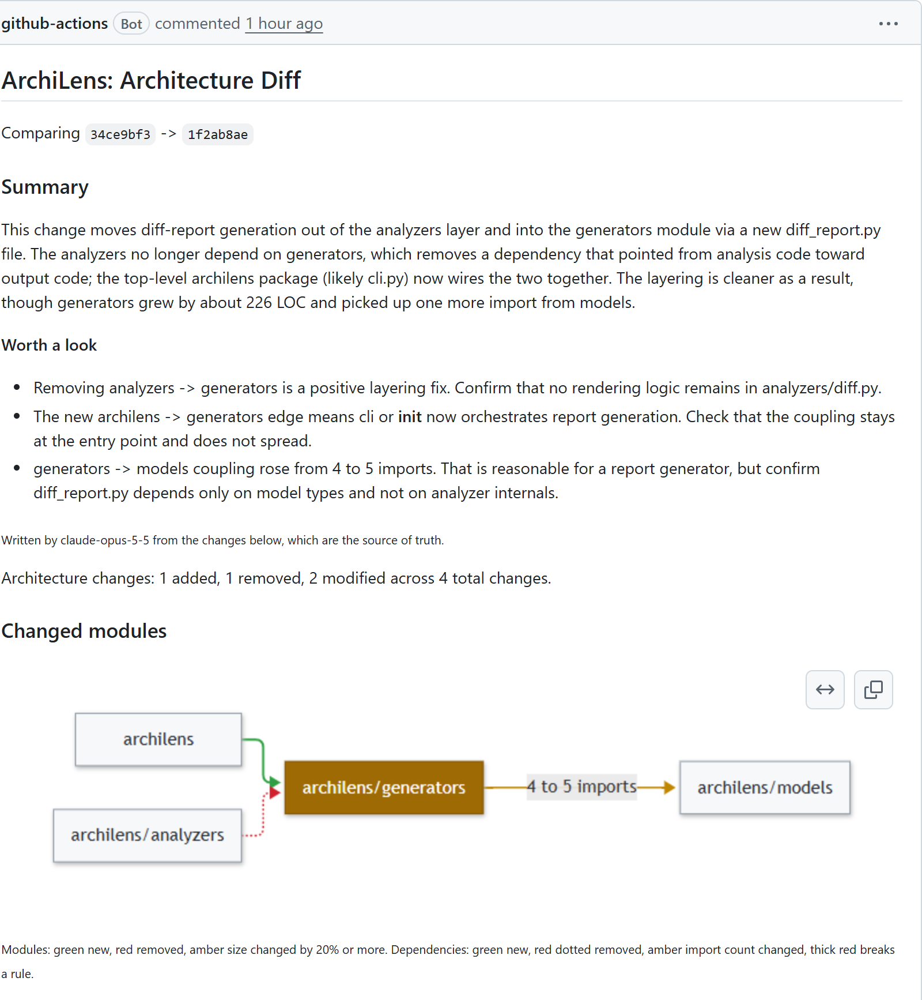
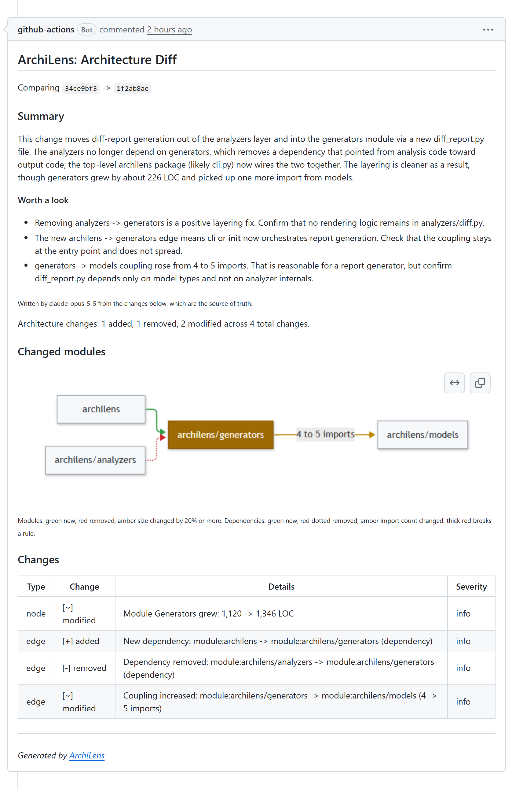

See your architecture.
Keep it that way.
ArchiLens reads your Git repository with Tree-sitter, draws C4-style diagrams from system context down to process flows, checks the rules you declare, and posts an architecture diff — with an optional AI review — on every pull request.
Static analysis first. AI only where it adds something.
Every diagram, rule result and diff comes from parsing your code. The AI layer is optional, cached, and never decides whether a build passes.
Discover
Walks what Git tracks, so .gitignore already excludes build output. Tests are tagged, not dropped.
Parse
Tree-sitter reads classes, functions, imports and inheritance with line precision. Regex fallback for other languages.
tree-sitterResolve
Imports become files, per language: Python packages and src/, tsconfig paths and workspaces, Java packages, Go modules.
Graph
Modules from your source roots, dependency edges weighted by import count, cycles and fan-out measured.
networkxRules
Forbidden dependencies by path or capability, no cycles, max fan-out. On a PR, only new violations fail.
archilens checkDiagrams
Four levels in Mermaid, D2 or PlantUML, rendered natively on GitHub. Plus a diff and a timeline.
L0 → L3AI enrichment with your own key: one-line module summaries, process flows traced from auto-detected entry points, pattern detection, and a review of each pull request's architectural impact. Unchanged inputs are answered from a content-addressed cache, and every run reports the tokens it used.
Zoom from the system to a single call. Like a map.
Scroll to dive. These are the real diagrams ArchiLens generated of itself at v0.15.0 — nothing hand-drawn. On L1, line width shows how many imports a dependency carries.
Who talks to your system
Your system as one box, with the external systems from your config around it: repositories, APIs, the agents that query it. The 30,000-foot view.
Modules and the imports between them
Every module, grouped by the business capability you declare, with one-line AI summaries if you want them. Every edge is a real import, weighted by how many.
Inside one module
Classes, interfaces and inheritance within a module as a class diagram. Here: the three diagram generators sharing one abstract base.
What happens at runtime
Sequence diagrams inferred from entry points, found automatically from pyproject.toml scripts, package.json, main.go and friends. Here: an agent calling the MCP server.
L0_system_context.md
Mermaid · also D2 and PlantUML · the config behind it
One comment per PR. The architecture, reviewed.
The GitHub Action compares the base and head commits and posts one comment that it updates on every push. Turn on AI and it opens with a review a human would write.
Summary and "worth a look"
What the change does to the architecture, in a few sentences, and up to four points for the reviewer. Empty when nothing stands out — never padded.
Change diagram
Only the modules and dependencies the PR touched: green new, red removed, amber resized, thick red for a dependency that breaks a rule.
Rules, with a memory
Violations already on the base branch are listed as existing. Only the ones a PR introduces fail the build.
Your key, your repo
The key is a secret in your own repository and is billed to you. Fork PRs get no secrets, so they get the static report. Model text is sanitized before it is posted.
1 request: 1,016 input and 287 output tokens. Re-runs are answered from the cache for free.

One CLI. Diagrams, rules, history, a viewer, and an agent interface.
AI review in the PR comment
Impact summary, points worth a look, a one-line description of each new module, and the process flow of any entry point the PR adds. Anthropic by default; other providers through LiteLLM.
enable-ai: "true"
Rules as code
Declare the dependencies that must never exist, by path or by capability. Checked locally and on every PR.
# .archilens.yml - name: "analysis-without-ai" type: "forbidden-dependency" from_capability: "Static Analysis" to_capability: "AI Enrichment" action: "fail"
Architecture diff between any two refs
archilens diff --base main --head HEAD extracts both trees from Git without touching your checkout, and reports added, removed, resized and moved modules and dependencies.
An MCP server for coding agents
Claude Code or Cursor asks where a file belongs and whether a new import is allowed, before it edits. Re-analyses when the repo changes.
// check_dependency_allowed( // "archilens/analyzers/diff.py", "archilens/generators") { "allowed": false, "rule": "analysis-without-rendering", "action": "fail" }
Process flows, no setup
Entry points are detected from pyproject.toml scripts, package.json bin/main, main.go, *Application.java and more. Each becomes a sequence diagram.
Evolution timeline
Point it at your semver tags and see modules appear, grow and disappear across releases, with the dependencies that came and went.
archilens historyInteractive viewer
archilens serve opens a local web app: click a module on L1 to drill into its L2, browse flows, search, and re-analyse without leaving the browser.
Three formats, every level
Mermaid renders natively on GitHub. D2 and PlantUML for everything else. All outputs are checked by rendering them with the official tools in CI.
--format mermaid | d2 | plantumlCosts you can see
Every AI run logs its requests and tokens. Answers are cached by content, unused ones expire after 90 days, and the Action keeps the cache between CI runs.
AI usage: answered from cacheTwo minutes to your first diagram. Five to your first PR comment.
No sign-up. Without an API key, ArchiLens runs the full static analysis and skips the AI steps.
Install
Python 3.10+ on macOS, Linux and Windows. Add [ai] for Claude, [viewer] for the web app, [mcp] for agents.
Init, then analyse
archilens init looks at your repo and writes a config that names its languages and modules. Then analyze.
Put it on your PRs
One step from the Marketplace. Add your own key when you want the AI review.
# static analysis only pip install archilens # with Claude summaries, flows and reviews pip install "archilens[ai]" archilens init # a config for this repo archilens analyze --repo . # L0–L3 into .archilens/diagrams archilens check --repo . # exit 1 on a failing rule archilens diff --base main --head HEAD --ai # the PR report, locally archilens history --repo . # across your semver tags archilens serve --repo . # interactive viewer
# .github/workflows/architecture.yml name: Architecture on: [pull_request] permissions: contents: read pull-requests: write # to post the comment jobs: archilens: runs-on: ubuntu-latest steps: - uses: actions/checkout@v7 with: { fetch-depth: 0 } # the diff needs the base commit - uses: saurabh-oss/archilens@v0.15.0 with: fail-on-violations: "true" # optional AI review, billed to your own key: enable-ai: "true" anthropic-api-key: ${{ secrets.ANTHROPIC_API_KEY }}
pip install "archilens[mcp]" # Claude Code (stdio) claude mcp add archilens -- archilens serve-mcp --repo /path/to/repo # or an HTTP/SSE endpoint for other clients (binds to 127.0.0.1) archilens serve-mcp --repo /path/to/repo --transport sse --port 8766 # tools: get_architecture_context · get_module_context # check_dependency_allowed · find_capability_owner
Stop drawing diagrams.
Start checking them.
ArchiLens is free, MIT-licensed, and runs entirely on your machine or your CI. Your code never leaves them unless you turn the AI on with your own key.